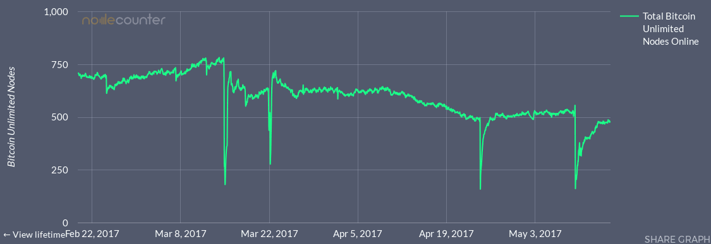
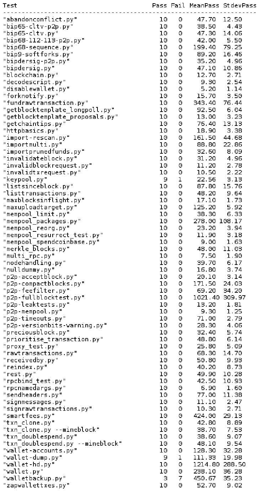

Weekly musing #12 - Gearing up for release
Final touches on ABC
Bitcoin ABC is a modified version of Bitcoin Core with a user-configurable maximum blocksize, i.e. an Adjustable Blocksize Cap (hence "ABC").
It is based on Core 0.14.1, and implements the UAHF specification. The source code and development can be found at https://reviews.bitcoinabc.org .
We've been very busy getting this to near release so far. There are a few minor finishing touches remaining on the code, but it's almost feature complete.
In a follow-up post I'd like to do a walk-through post of the changes at some stage, but this requires reformatting the baseline (the Core 0.14.1 commit where ABC branched off) so that we can cleanly compare what was built on top.
The difference looks bigger than it really is in terms of code changes, because nearly the entire codebase has been put through clang-format to clean up the source code.
This obscures the significant functional changes to an extent.
A git diff --stat shows 508 changed files so far - that includes files that were newly added (e.g. ABC tests) and files that were removed (e.g. those related purely to SegWit).
Re-formatting the baseline 0.14.1 with the same style rules to get a clean comparison requires some touch-ups. This is because some sections in ABC were protected from clang-format's modifications. There are also manual formatting actions to improve layouting of comments, although these are easy to ignore. Overall, there were 337 commits since development on top of Core commit 964a185cc began.
It could be helpful to mark the functional changes related to UAHF with their respective requirements.
Test framework issues
We have identified what is likely an issue with the Python test framework's handling of peer messages.
During tests with large blocks, the test framework's mininode may run into buffering problems on the received data, which often leads to test failure. This only seems to happen towards the end of one big-block test at the moment, and there is a workaround to reduces the chance of this happening.
However, it is very likely that we need to re-work the test framework's message buffering and processing if we want to be able to do very-large-block tests.
Perhaps this played a role in previous tests where we struggled to test > 16MB blocks.
On testnet3, the forked client has produced blocks over 15MB already which were well received by its peers.
Weekly musing #11 - Homework
{kind=link}
Bitcoin ABC
Work is progressing towards the Bitcoin ABC implementation. Already it was able to digest blocks slightly larger than 8MB on BU's no-limits testnet. In regression tests, sizes up to 16MB have not posed a problem.
Scaling Bitcoin Core may not be as simple as adjusting a single constant, but ABC proves it can be done.
UAHF
The release of the UAHF contingency plan [3] and the accompanying technical specification [4] marked a decisive answer to the threat posed to Bitcoin's security by BIP-148 (UASF).
ABC adaptations for the counter HF to the upcoming UASF are in an advanced stage and expected to be ready for validation soon.
Bitcoin Unlimited
BU is working on a UAHF-compatible specification [5]. It is provisionally called 'BUIP-HF'. Development is going to be channeled through the 'buip-hf' branch on my Github repository, from where I will feed Pull Requests back to BU.
A guidance document has been created for contributing BU developers.
Preparations are also underway for another point release of BU prior to a major release later this year which should bring most of the 'dev' branch changes over to 'release'.
BTCfork MVF
I'm considering adapting the SegWit trigger condition of the MVF's to take into account the planned SegWit2x activation conditions (which seem to have swung in favor of BIP-91 now). Still to be decided, but my stance is unchanged - in the event of SegWit activating on the main chain, there should be a spin-off to provide a SegWit-free alternative. This could be UAHF, but since that is planned to activate some hours after UASF, it could make sense to activate an earlier spin-off at the same time as UASF.
References
[1] Image of blackboard derived from https://commons.wikimedia.org/w/index.php?curid=36633029
by Raysonho @ Open Grid Scheduler / Grid Engine - own work, CC0
[2] Image of academic with square cap derived from https://commons.wikimedia.org/w/index.php?curid=14939026
by Gardner Cotrell Leonard - “Academic Costume.” in A Cyclopedia of Education, edited by Paul Monroe, 17, New York: The Macmillan Company, 1911., Public Domain
[3] UAHF: A contingency plan against UASF (BIP148)
Weekly musing #10 - Learning the ABC's
Bitcoin ABC
Bitcoin ABC - short for Adjustable Blocksize Cap , is a big-block capable client based on Core 0.14.1 that is progressing in development and gaining more contributors and code reviewers.
Parts of the main functionality (being able to adjust the block size cap through a configuration option) have now been implemented for the command line client. Others remain to be added, for example being able to display its accepted block size limit in the well-known /EBx/ format used by BU and Classic.
A version of ABC should be out for testing in the next few weeks!
Bitcoin Unlimited
A specification for a hard fork release along the lines of BUIP 055 is taking shape. I have had the pleasure of collaborating with various developers and stakeholders in drafting this, and it is nearing completion.
Many refinements have been made over BUIP 055.
For example, there is provision for bi-drectional replay protection, and protection against re-organization by the legacy chain.
BTCfork
With a wide variety of projects rallying around the idea of a near-term HF, elements of BTCfork's MVF may come in useful for implementors of other clients.
In particular, clients targeted at end users might benefit from the automatic wallet backup functionality written by redmarlen (a fellow BU developer too). This could be integrated into other fork clients quiet easily.
Weekly musing #9 - The freedom to choose your own cap
{kind=link}
Bitcoin Unlimited
Voting is over, and the results for this round of BUIPs and new member applications is in. Congratulations to the new members! The new system was quite pleasant to use. I hope it will continue to get improvements. One that most of us would probably like is batched voting, so one doesn't have to sign for every issue individually.
To those applicants who did not get in this time, I hope you will apply again and participate in the meantime! Some clearly did not make it in because existing members abstained or voted in low numbers, which troubles me a little. I think 21/49 voter turnout is not that great - certainly room for improvement.
Improvement Proposals
On the BUIP side, I am happy that BU has passed the BUIP026 to offer bounties for exploitable bugs.
CompactBlocks were accepted by a nice majority, so they will become reality in BU! This should lead to bandwidth savings all around. With BU's network code undergoing big refactorings on the development branch, it will be a bit of a challenge to develop, but nothing insurmountable. Existing tests from Core and XT can hopefully be re-used with minor adaptations.
I'm also excited about BUIP052 - this should get the project a separate Continuous Integration service for daily tests of the whole test suite. BU contributor awemany has been investigating fuzz testing, which would be a good thing to include on such daily tests.
A bit disappointing is that BUIP053 and BUIP054 did not reach quorum, and had to be closed despite quite solid majorities in favor of these proposals. It was just not enough this time around.
BUIP053 (Tweakable DoS responses) in particular is one I had high hopes for in terms of moving us away from a relatively static and inflexible scoring/banning design, towards something that places more power in the hands of users and reduces the impact of (potentially bad) developer decisions.
Also great news is that both BUIP055 (hard fork in near future) and BUIP056 (support-threshold triggered block size increases) were passed. The first one indicates that membership clearly recognizes the urgent need to act in offering a definite hard fork to the market, especially in light of the threat of UASF. BUIP056 appears a good way to reach consensus within the EB signaling framework pioneered by BU but which is being adopted by other clients such as Classic and hopefully more in future.
BUIP057 (BIP135 support) could be useful for future upgrade deployments, due to its flexibility in configuring activation thresholds and grace periods for proposed forking changes (whether soft or hard).
Nolnet reboot
Initial testing on BU's rebooted Nolnet (no-limits testnet) suggests there could still be issues related to unwanted node banning during block header synchronisation.
But the rebooted parameters of the network will ensure that Nolnet addresses are different from ordinary Bitcoin addresses, and so avoid possible mistakes that could result in some financial loss. Nolnet will also reset to minimum difficulty now, so that locking out testers by raising the difficulty to a very high value will not be possible so easily (at least, not for long periods).
BTCfork
The new Nolnet settings need to be integrated into MVFs, as I plan to have the MVF's be able to participate in fork tests, also w.r.t. BUIP055.
I found an embarrasing bit shifting bug in the replay protection code. Thanks go to Tom Harding for inspiring me to look over it again.
Funny how one can get inspired to look carefully at one's code when someone else is interested in it too 
Another small change that seemed prudent, was to bypass the MVF's adjusted difficulty retargeting code if the user specified that the difficulty was not to be reset at the fork activation. So now, if diffdrop=1, only the old difficulty code path is used. I had not really thought much about minority forks which want to keep the difficulty the same, but if there are such, then it's better to carry on running the existing code.
Bitcoin ABC
Still working on the ABC functionality - have been mostly reviewing changes by the project lead.
References
[1] Image of Asics cap: public domain (CC0) by freetrader freetrader@tuta.io
Weekly musing #8 - Keep calm and fork
{kind=link}
BTCfork
A rebase on very recent BU dev branch has been completed.
I learned the painful lesson that it is much easier just to merge in the changes from upstream as opposed to actually rebasing (in Git's sense) all the MVF work, which would necessitate a forced push on MVF-BU's master (default) branch. That would be disruptive to those who have checkouts of MVF-BU (not many, I suppose, but it would be bad practice).
Thinking about requirements for a UASF counter-fork to UASF will see me adding a few requirements to the MVFs.
One of them is probably time-based forking - in order to fork exactly on an unknown block height which corresponds to the median time activation criterion of BIP148 or similar proposals. This would make MVFs capable of forking on either block height OR a chosen time, whichever comes first.
One could set the block height to a very high value if one did not want to use it, to let the time-based forking take precedence.
I've held off on implementing time-based forking up to now since it comes with a few more complications. The client cannot tell for certain when the final pre-fork block has been received, and this makes things like changing to the new consensus rules and performing wallet backups harder. But it seems that flag day forks like UASF require a forking trigger in MVF to be able to fork at exactly the same time, so as to create the least difference between the fork blockchain and the legacy chain.
A rebase of MVF-Core is still outstanding. The objective will be to rebase on Core 0.14 minus SegWit/RBF, but with Adjustable Blocksize Cap.
Bitcoin Unlimited
Apart from reviews and minor fixes to some extended tests, I've uploaded my eligible BUIPs for the coming voting round.
I am keen to see the new voting system in action, although it is becoming clear that it will need a bit of handholding by its creator for the first session. This is of course normal. So far, I like what I've seen! There are some areas that may need small improvement in future, e.g. in management of unpublished proposals, and dealing with users who have lost their keys and need to revoke them. The latter part may be a bit tricky! I would recommend BU users to always keep a separate PGP key for BU signing purposes, so that they could use that to revoke the Bitcoin key in a pinch.
References
[1] Image of Vevey fork in Lake Geneva derived from public domain (CC0) work:
https://pixabay.com/en/vevey-lake-fork-switzerland-museum-2104986/
Weekly musing #7 - User Activated System Failure?
It will be interesting to watch as UASF activates on August 1.
Bitcoin should be a robust protocol on layers 8 and above
Bitcoin Unlimited
Hopefully kyuupichan's port of the Classic parameter fixes makes it into BU soon. After reviewing it, I like it a lot - the changes should make BU safer to operate. It did show however, that a single reviewer does not catch everything - I missed a reference to 'Bitcoin Classic'!
As the time approaches for another exciting round of votes in BU, I have added two BUIPs which I feel can help:
Dynamic checkpoints
This would offer a general way to address re-org risk when a transition from one blocksize Schelling point to another happens. Currently of course we face the 1MB barrier, but maybe in the (far?) future we face a 32MB barrier etc.
Eventually, dynamic checkpoints could be created when certain conditions on the chain are met (case in point: when the first >1MB block is generated).
Short term, they could offer some resistance against massive re-orgs caused by an attacker. One could conceivably add regular (automated) dynamic checkpointing (e.g. every day, replace the most recent dynamic checkpoint with a new block that is at least a week deep).
Make "sticky gate" optional
In retrospective, I think BUIP038 may have lost support because it did not offer users the choice of running with the "sticky gate" feature. It could also have been bad luck / apathy during that particular voting cycle. Not everyone feels able to vote on such technical issues - this is also part of the problem with increasing complexity - which is what I think may have also killed the counter-proposal, BUIP041.
One thing remains clear: the "sticky gate" was successfully exploited on social media to paint BU in a negative light, using the speculated "median EB attack" which hopes to divide the network by producing a series of larger blocks. Having the feature disabled by default would make BU's "Emergent Consensus" default logic slightly easier to grasp, and would also make it harder to attack in the proposed way.
Bitcoin-ABC
I've created the "dirty" implementation of a 2MB-capable Core, albeit it does scale block max sigops correctly yet (it allows up to 40K sigops per block instead of scaling at 20K per MB). It does however pass the existing test suite.
I've not pushed my private ABC branch yet, as there is still work to be done on it.
BTCfork
I am planning to rebase on latest BU dev again. It would be good to test out dynamic checkpointing in a feature branch of an up-to-date MVF-BU.
Weekly musing #6 - And up again...
{kind=link}
Bitcoin Unlimited
v1.0.2.0 release (fix for 2nd memory exhaustion incident)
Another release (1.0.2.0), fixing another Xthin exploitable bug similar to the previous memory exhaustion issue.
Again, the problem and a workaround were quickly identified. Having use-thinblocks=0 disables Xthin more effectively since 1.0.1.4 - fortunately that worked and probably protected quite a few nodes. Still, having 1/3 of the BU nodes killed again obviously shakes confidence.
A lot of fixes were brought together for the 1.0.2.0 release, which made it take longer. Good things take time, but bad code can waste a lot of time. I guess BU is paying the price for changing p2p protocol code without sufficient review and testing in the early days. While some of the easily exploited holes have now been closed, there are some worries remaining, like the risk of someone producing relatively cheap collisions, or the memory limit while reconstructing thinblocks being perhaps a little higher than needed.
Still, my feeling is BU is getting more robust with each attack. However, recovery was a little more protracted with this one, as it tool longer for the official binaries to be released. Source code fixes were available in PR form quite early on.
There was however again a percentage of users who probably will not come back to BU because of this incident. Classic seems to have made some small gains (not visible on chart below).
|  |
{kind=link}
With the aid of a little script from thezerg, I managed to get my BU gitian build working for this release, and was thus able to sign the 1.0.2.0 checksums. I think I will need to abandon my gitian build VM though, it seems just to slow compared to others.
pruning.py problems not local to BU
After getting such poor pass rates on the pruning test, I executed it on Classic and Core latest builds as well.
On Classic, it went into a loop, which I stopped after several hours.
On Core, it timed out as well. I raised Github issue 10393 which has yet to receive a response.
Miscellaneous
I opened an issue for the overly verbose keypool traces in the log file. These have been bugging myself and others - they often lead to questions whether something is wrong. I have not decided which debug flag to use for them.
BUIPs
There are some interesting coordination-related proposals which have been raised on the forum (in Draft BUIP form):
- Peter Rizun's BUIP055
- Tomas van der Wansem's threshold-based BUIP (no number yet)
- Sancho Panza's BUIP to add BIP135
I'm looking forward to the upcoming voting - I will raise BUIP038 too since it did not get quorum the time before last, and I think that it should be put to the vote now that membership and participation have increased. I am undecided on whether to make it into a new BUIP with a toggle to enable the sticky gate instead of just removing it as BUIP038 proposed. If anyone has strong feelings about that, I'd like to hear about them!
Bitcoin-ABC
The failing regression tests have been sorted out - ABC is now passing its Travis tests.
- Removed SegWit regression tests
- Fixed p2p-compactblocks.py
- Fixed wallet transaction check which failed lots of regtests
- Removed leftover bumpfee code
- Removed replace-by-fee.py
- Fixed maxuploadtarget.py
While looking at fixing the failing nulldummy.py test, I considered removing the NULLDUMMY support entirely. It is a soft-fork which is actually functionally separate from SegWit, but deployed on the same bit! This is a bit unorthodox, but on the mailing list Johnson Lau defended this with the reason that it would reduce testing effort for SegWit not to handle it as an independent soft-fork.
After raising an issue to decide on the right course of action, I discussed it with deadalnix, who was in favor of retaining it for now.
I have created an ABC branch (on my personal fork repo) where I have executed a more aggressive removal of this currently unused feature and its test. I will be cherry-picking from the mainline ABC repo, trying to keep it clean of features which are not yet present or needed in today's Bitcoin Core, and focusing only on the basic blocksize scaling part.
As part of resolving the failing tests, I did 10 runs of the '-extended' regression test suite, excluding the 'pruning' test which takes too long. The results were interesting - not all tests are passing reliably on my (old) system. Times are in seconds, and only the times of passes are counted for mean/stdev statistics.
|  |
{kind=link}
The next step will be adding a true Adjustable Blocksize Cap. This will be where the fun really starts!
If anyone is interested in assisting with the ABC effort, contact us or submit PRs / issues directly on Github!
parity-unlimited
There is some more developer interest for giving parity support for bigger blocks. Personally, I did not find time to continue test experiments with parity-bitcoin or parity-unlimited, but it's been nice to chat with other people on the BU slack about it.
Weekly musing #5 - Testing, Testing, ...
 |
Bitcoin Unlimited
I've been testing and raising issues on Github for some failing
tests that we are troubleshooting. (I guess it started
with the failing pruning.py, but we encountered more
during recent updates meant to close some post-1.0.1.4 gaps.
Among them:
I tested another one with sickpig (validateblocktemplate).
Most if not all these test failures were apparently random failures, some involving infinite loops.
Random failures can slip through Travis CI undetected, only to surface later. This seems to have already happened, based on subsequent investigations.
This is a prime reason to run the full test suite (including extended tests) multiple times a day, on as many platforms as possible. Fortunately BU's Travis account has been upgraded to a paid one, at least this means the project will be able to run more tests.
Running tests repeatedly
Our parallel testing wrapper for unit tests has an -r option for
repeating tests, but our regression test wrapper (rpc-tests.py) currently
does not. This is something I'd like to enhance, it is frequently needed
because a lot of failures are not deterministic.
One can of course always write a little shell script. I used this one which runs the test repeatedly using a timeout per run, logs failures to a temporary file and prints out the total number of failures at the bottom.
#!/bin/bash
TIMEOUT=100 # seconds, need to adapt to specific test
TEST_COMMAND="qa/pull-tester/rpc-tests.py abandonconflict"
for i in {1..100}
do
echo "`date`: start iteration $i"
timeout --foreground $TIMEOUT $TEST_COMMAND || echo "this is a failure"
killall bitcoind
done | tee /tmp/testfailures.log | grep -c "this is a failure"
Messy, but it works.
Hopefully, an improved rpc-tests.py will do this for us in future, and spit out more statistics e.g. average time per run and maybe the standard deviation of that.
Bisections
Once you know a test is failing randomly on a certain revision, you need to find out what introduced the problem.
If you cannot tell easily, then you can usually get some idea by testing backwards from a known bad commit (usually the head of the branch you are working off) to find the first commit that broke the test, and see what it changed.
If the source of the problem possibly lies back a long time, going back over each revision takes a long time. You can try doing a bisection which is much quicker (but you need to know a working revision sometime in the past).
I submitted a PR for a helper script that can be used in conjunction
with git bisect to run a bisection on a test that is failing
randomly and/or getting stuck in a loop.
I committed the original version
of this script in my personal repo under GPLv3, but I submitted it
in improved form in PR532.
That PR introduces an additional documentation file with some tips in doc/bug-triage.md.
The script has so far proved quite useful, but it does have limitations, for example when the build breaks in some past commits. Be sure to read the file header of the script and the mentioned document if you plan to use it.
The main benefit is that this script can triage randomly failing and looping tests. It can be used in "one-shot" mode without running a bisection, of course, just to either
- run a test command repeatedly (set a huge timeout if you know the test does not time out)
- catch a test which times out (although you can also use the timeout(1) command in Linux)
parity-bitcoin
I've never dabbled in Rust before, so I was surprised that it was not too difficult to get to a running version of parity-bitcoin. Fortunately I did have a little help though from Christian Nyumbayire (Chritchens on the forum and Reddit). He is working on an adaptation of Parity that he called 'parity-unlimited' and is currently taking shape. Initial steps will hopefully demonstrate that parity can handle a hardcoded bigger block size (e.g. 2MB) well.
Here is his announcement thread, in which he also left valuable information on how to install Parity (some information on installing dependencies got me past initial hurdles).
https://bitco.in/forum/threads/multi-implementation-client-development.2092/
I was able to successfully run the unmodified parity-bitcoin unit test suite (one test was ignored but all others passed). Unfortunately, my initial attempt to run the regression test suite failed - it got stuck with bitcoinj receiving an empty block header.
Whether this was a problem with my build (I did not build the 'release' build) or still a bug in the regression tests is something that future trials will show.
It is already promising that it got very far in the regression tests. Hopefully it can soon become a big-block capable neighbor of Bitcoin Unlimited on the actual network.
BTCfork
I managed to resolve the little issues that were troubling Travis, and so complete the merge of recent upstream BU 'dev' into MVF-BU.
Two long running tests (excessive.py and parallel.py) had to be moved to the 'extended' set of tests which are not automatically run. This is because BTCfork still operates on a free Travis instance with a cutoff time of 50 minutes.
The fork code introduces some long-running tests of its own, and these have to be tested more frequently. However, when touching code that modifies block handling, it will be necessary to manually run the relocated tests, and occasionally swap them into Travis for testing across different build platforms (which I don't have).
I will be starting work on a checkpoint feature next, but more details about that once it is ready.
Bitcoin-ABC
BU contributor deadalnix created a repository of a Bitcoin Core 0.14 client which has the SegWit and RBF removed.
This can serve as a basis for future Adjustable Blocksize Cap modification, hence he called it: Bitcoin-ABC!
I have started assisting on this effort by helping to resolve some failing regression tests. Most of the issues appear due to incomplete removal of SegWit test code, and should not take too long to clean up.
It would be exciting to have a recent Core with a configurable limit! Any volunteers are more than welcome to assist this effort.
Footnotes
[1] Fixings Problems comic thanks to https://xkcd.com/1739/ (CC BY-NC 2.5)
Weekly musing #4 - Labor Day 2017
 |
Bitcoin Unlimited
Quite a week! Too much excitement!
Memory Exhaustion attack, BU release 1.0.1.4
What began as a gradual decline of BU nodes on the network turned into the sharp decline on 24 April.
Cross-checking with others on Slack and examination of logs followed. An initial diagnosis of the attack was soon made, as fortunately BU developer Peter Tschipper had already been working on a thinblocks patch that was believed to mitigate this kind of attack. His patch turned out to be effective, and provided a good first line of defense to the BU network. Nodes were upgraded within hours, and the patch was reviewed and improved for several hours until it was deemed fit for including in a release.
I will leave an account of the further details to the official BU Incident Report.
By way of this incident, I had opportunity to revisit my Gitian build machine, as I wanted to check if I could participate in verifying the formal release build. I reconfigured a VM that I had previously set up for doing a Gitian build of other projects (Classic, BTCfork). This VM had given me some trouble with Gitian builds of Classic, where it produced binaries with different checksums. I took this chance to see if a similar problem would occur when trying to do a Gitian build for BU.
With instructions provided by Andrea Suisani, I was able to reproduce the Linux release build results. Unfortunately I noticed that my VM is very slow in comparison to the fast builders used by others. So in the time it took them to build all platforms, I only managed to build the Linux binaries. A contributing factor may have been that it was the first time I did the BU build on there, and it had to build all the dependencies first. Maybe next time will be quicker.
Of course, if you're going for a faster build, you may want to set up the host system on a native machine, and not bother with a separate VM. Maybe in a while I'll get a faster machine for these kind of builds and tests.
I'm going to provide a link to the instructions on how to set up a VM or physical system for Bitcoin, and pass on the additional instructions provided to me specifically for BU:
sudo apt-get install git apt-cacher-ng python-vm-builder ruby qemu-utils
git clone https://github.com/BitcoinUnlimited/BitcoinUnlimited.git BU
cd BU
git checkout release
cd ..
git clone git@github.com:devrandom/gitian-builder.git
cd gitian-builder
./bin/make-base-vm --arch amd64 --suite trusty # this need to be done only once
# for the --commit flag you need to set a branch or a tag.
# You could use also --num-make #JOBS and --memory MEM (memory to allocate in MiB)
./bin/gbuild --url bitcoin=https://github.com/BitcoinUnlimited/BitcoinUnlimited.git --commit bitcoin=release ../BU/contrib/gitian-descriptors/gitian-linux.yml
Hopefully these will help someone else achieve a working Gitian build too. BU needs more people who can do Gitian builds, so that it can respond quickly with hotfix releases.
Testing for unwanted XthinBlocks code execution
After it became clear that the vulnerability exploited by the attack was again in thinblocks code, I made a check to gain confidence that BU's --use-thinblocks=0 switch was effective.
I instrumented the code with some assert(0) statements as many relevant thinblocks code sections as I could find. These would force a crash if those sections were entered.
This is an easy check that anyone can do for a new feature.
It does not require in-depth understanding of how the feature works - just find all references and apply some common sense while booby-trapping the code.
I found one case where thinblocks code was still executed as part of Xpedited functionality even though I had configured use-thinblocks=0 on my node.
This was reported and fixed by Peter Tschipper's pull request 486
There was general agreement that Xpedited, which depends on thinblocks, should not be enabled if thinblocks is disabled.
Personally, I would prefer if every new major feature had a clear switch to turn it on/off. Even if features are good and useful, I would consider it safer to deploy it with new features disables by default until those features have been tested for a sufficient time, and then set the default to be activated. On a software development level, this is more effort, but it makes it much easier for most users to get back to a safe operation if there is a problem with the new feature. Power users may have the ability to run multiple versions of the software at once, but this is probably not the case for the majority of users. Maybe like Gavin Andresen said, we need to get to know our customers a little more. It should be sufficient to raise a PR (or a BUIP if want to force a vote on the issue) to change the default on/off setting for a feature, then members can vote and the non-member public can also give their opinions to the discussion.
{kind=link}
Pruning
The pruning feature introduced in Bitcoin Core 0.11 was designed with 1MB blocks in mind, and needs some adaptation for bigger blocks. I raised issue 473 to address this. It will be needed once we obtain bigger blocks, otherwise pruned nodes on machines with strictly limited space might run over their configured soft limits or even hit hard quotas / run out of disk space completely.
In the PR, I propose a fix that would involve making the minimum number of blocks to retain a configuration item, while keeping the existing prune=<size> parameter.
The user would be warned in case of the pruned size being exceeded, and could choose between keeping less blocks, or increasing the space for pruning.
Jameson Lopp kindly pointed out a related consideration - that the AD parameter could influence the minimum number of blocks to be retained in order to be able to perform a re-organization safely.
To start development, I experimented with the pruning.py regression test.
Unfortunately, I found this test, which is normally disabled due to its long runtime and high disk usage (>4GB), to be highly unreliable and afflicted by problems.
It did not pass on the release branch without rolling back to a certain commit, and on the dev branch it went into an endless loop (confirmed by other testers too).
The endless loop behavior led me to open a feature request for loop detection and abort in the test framework (PR 480).
I opened a separate issue to collect data about the pruning test status for various environments. Several contributors assisted with testing. The issue is still being progressed - so far I found one environment where the test passed (if rolled back to a 'healthy' commit). It seems that there are issues related to the p2p networking which may be interfering and causing client bans and timeouts. The work on the pruning test definitely involves fixes to the client, and I'm working closely with other developers on that.
Log privacy considerations
A Github user raised an issue about privacy concerns to do with IP address logging in the BU client. This is definitely a consideration close to my heart.
Usually the logips=0 option should prevent any unnecessary output of IP addresses in the log file and debug console.
What exactly constitutes a need to override this, if at all - this is a question.
Most error messages provide very little information if the network information is not included.
Traditionally these seem to be unprotected by the logips flag.
There are, however, error instances such as 'BAN THRESHOLD EXCEEDED' messages where IP logging should definitely be applied only if requested.
I wonder if it is not simpler to apply the policy that if logips=0, then definitely do not log an IP address.
We may need to output a special abbreviated trace in such cases, if the notification is still important.
To ban or not to ban (peers)
In the followup to the memory exhaustion attack, Gregory Maxwell raised Issue 485 on the BU Github:
Short-id collisions allow attackers to cause arbritary bans of thinblock peers
Subsequent discussions on BU Slack highlighted a need for further improvements to the thinblock subsystem. I think BU has a good handle on the issues, and is more aware now that improvements in this area have to be made and assessed very carefully.
One point that is becoming clearer:
If this is left up to the developer to decide, the response can range from "ignore" to "ban immediately", with variations on gradual banning in-between those extremes. And choosing a too harsh penalty (e.g. immediate ban) can result in further problems.
While it would be great to have a consistent policy that software developers could apply to solve every problem around misbehaving peers, I think that is wishful thinking, because attackers are very creative, and the network is anyway a constantly changing sea.
The key lies, I think, in viewing this as policy and giving the node operators the necessary tools to defend their nodes, by making the response more configurable.
I think we should make all Denial-of-Service defense responses tweakable, and have a user menu (and RPC interface) for adjusting them.
Of course, developers still need to think about what a sensible response level for a new protective measure would be. But they could deliver a parameter file with all the defaults, and let the user easily override the configuration to suit their needs.
If a response is found unsuitable, there is no need to immediately issue a corrective software release - it would be sufficient to publish an advisory notice recommending to change a certain parameter in response to a network threat.
The 1MB fork transaction
Last Sunday, someone (/u/1MBforKTR1gAqRLkNbQg) posted a very interesting thread on Reddit which contained a link to a very large transaction which, if mined, would create a block > 1MB and thereby create a chain fork.
This proposal soon turned up as a change request to BU to allow such transactions to be pushed (p2p) over the network. On the same day, it was also submitted to Core, who rejected it without much discussion.
I replied to the BU issue and PR, stating why I did not think such a change was needed (a miner wishing to create a > 1MB fork chain could mine the transaction already). However, I was open to arguing the case for/against it.
For some reason, the poster who raised the issue did not respond with more rationale on BU's issue tracker after my enquiry. I was a little disappointed to find a Reddit update post from them which stated that 'No one else reached out'. We did reach out and try to discuss their pull request!
Unfortunately, we have little discussion on the PR so far, with everyone attending to other urgent matters. I presume this will result in the issue being closed if the poster does not engage further.
As was also pointed out, the poster holds the keys to funds donated to that the addresses in that transaction. I like the improvements suggested by /u/edmundedgar in this comment thread on the original proposal:
In my opinion, the ability for separate coins by using the 'faucet' feature of this transaction is one of the interesting aspects of this proposal. Perhaps something like this can be leveraged by an exchange or miner willing to produce such a block. I would definitely be more relaxed about the keys for such a transaction being in known hands.
The road to CompactBlocks
This week's other issues left no time for me to start deeper investigation of CompactBlocks. Other devs have expressed interest in an experimental branch for it, and there is positive support expressed for it in BUIP051. This makes me optimistic that it can be put up for vote and perhaps even reach agreement for implementation.
BTCfork
After the recent merge from upstream BU 'dev' branch, there were some minor leftover issues manifesting as test failures.
These were mainly related to build system changes and moving from Python2 to Python3.
Those have been fixed, and happily upstream BU did not break any of the fork-related functionality - all tests pass.
Fortunately we did have good unit tests in the arith.py module, which helped when troubleshooting an integer division problem which broke the mvf-bu-retarget.py test (wrong expected difficulty after reset).
The problem turned out to be in the helper procedure that emulates the C++ difficulty adjustment algorithm.
On Python3 scripts need to use floor division (//) otherwise a floating point division will be performed.
This resulted in a slightly different difficulty value, and for a while I was worried that the upstream merge might have subtly changed something about the fork trigger and resulting difficulty reset.
A remaining problem now is that one Travis test fails because it checks the code formatting (using clang-format).
This currently fails for some of the code which MVF modified, so those source files will need to be reformatted.
I'm hoping to get around to that in a day or two, as soon as I have a native clang-format on my old development box.
I've decided to build LLVM / Clang from source on there. I was shocked to find that the LLVM+clang(+extra tools) build took up 40GB of disk space, and at times I had to reduce the number of parallel build threads to just one because my memory was being exhausted by the build! I think I would recommend just installing clang through your package manager
Before I merge from upstream again, I'll await some stabilization on BU's 'dev' branch after the recent memory exhaustion attack fixes. There is still much work ongoing to polish those fixes and make BU's custom thinblock and expedited code as robust as possible.
Footnotes
[1] Labor Day image in Public Domain via Wikimedia Commons
https://commons.wikimedia.org/wiki/File%3A1900s_Toronto_LabourDay_Parade.jpg
[2] Pruning image in Public Domain via Wikimedia Commons
Photo under license of National Park Service, United States Government, Frederick Law Olmsted National Historic Site.
https://commons.wikimedia.org/wiki/File%3AArborist_pruning_Statue_of_Liberty.jpg
Weekly musing #3 - Mr Bitcoin is hungry
{kind=link}
Bitcoin Unlimited
I raised BUIP051, am going to take a close look at porting those changes over from XT during the coming week or two.
Happily, the proposal to spend some money for a better (paid) Travis build service has met with a supportive reception at BU, so I think we are soon going to have the possibility to run longer test suites (up to 120 minutes each - maybe need to break the test suite down into several batches which individually fit in under 2 hrs, or just execute randomly and time out just below 2 hrs).
Parallel execution of regression tests might be helpful. I'm planning to add that feature to BU's rpc-tests.py (Core has had that feature for a while).
Until then, I've pull-requested some minor test runner improvements I made in MVF-BU, to allow execution of single tests with specific arguments, and allow one-off test runs of disabled tests. This should make it a little easier for testers to run disabled tests - now they don't have to edit the rpc-tests.py script code to temporarily enable a test.
Some nice changes from Classic have been ported to BU by kyuupichan: the improved command line parameter handling which prevents invalid parameters from being silently ignored at startup.
BTCfork
Finally got around to merging the latest Bitcoin Unlimited dev branch changes back into MVF-BU. Turned out to be something like 1200+ commits - who said BU isn't developmentally active? 
Unfortunately, Travis is not yet completely happy with my merge - it seems some build environment changes or file movements have broken the test framework. My own 32-bit test system also needs to upgrade to a C++11 compiler to handle the upstream compiler requirement changes. All in all, these seems like minor things that can be cleaned up fairly quickly - over the course of the next few days. After that, MVF-BU will be back on track for further development.
Extension blocks or bigger regular blocks
After Gregory Maxwell's recent post on bitcoin-dev, the clamor for UASF SegWit seems to have died down a bit - maybe it's just on the back burner.
Bitcoin Unlimited seems to be within good reach of regular big blocks.
Extension Blocks looks like another promising idea, but quite a complex undertaking in comparison to straightforward big blocks.
Maybe Mr Bitcoin will place an order for both, and see which one the kitchen can deliver first?
Footnotes
[1] Original Japanese Silky Tofu image by DryPot (CC-BY-SA-3.0) at
https://en.wikipedia.org/wiki/Tofu#/media/File:Japanese_SilkyTofu_%28Kinugoshi_Tofu%29.JPG>
{kind=link}
This blog is powered by ikiwiki.